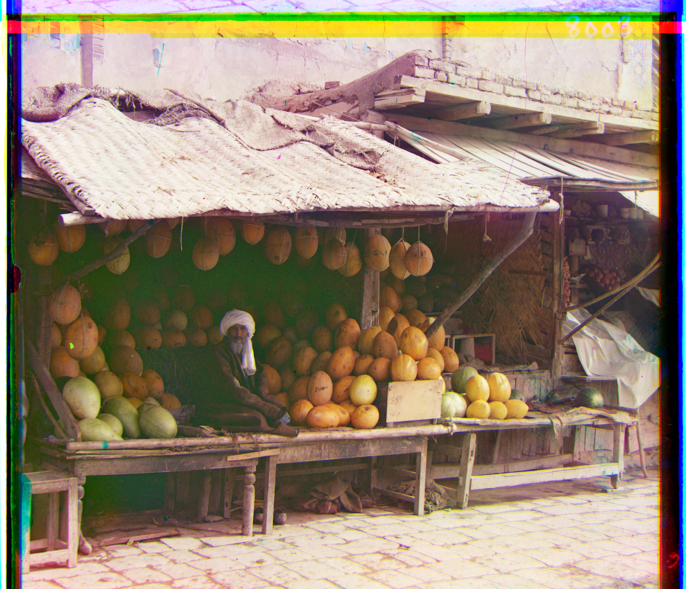
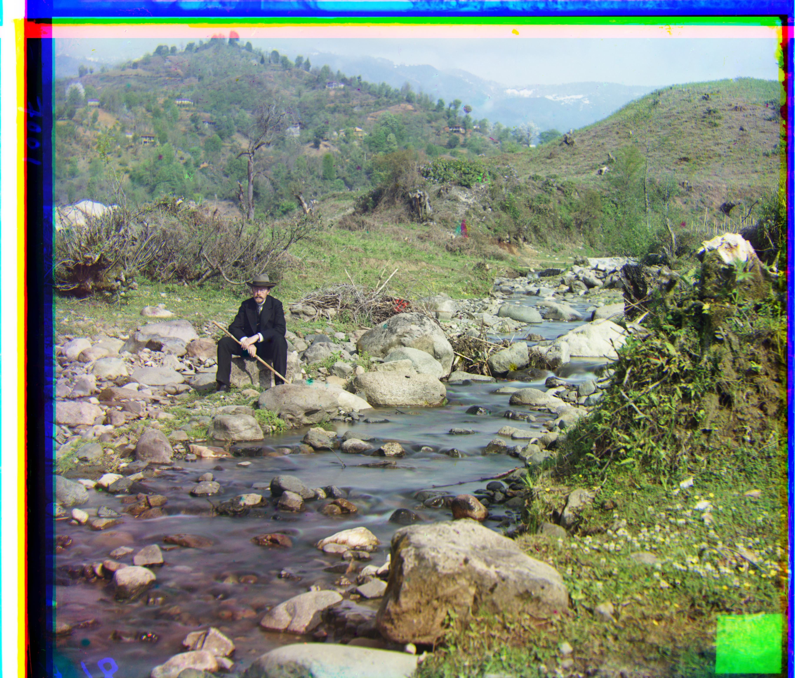

Project Overview
This project focuses on colorizing the Prokudin-Gorskii Photo Collection, a series of photographs taken by Russian photographer Sergei Mikhailovich Prokudin-Gorskii in the early 20th century. We aim to take the digitized glass plate images and automatically produce color images with minimal visual artifacts. The process involves extracting the three color channels from the original images, aligning them, and combining them into a single RGB color image.
Approach
L2 and NCC Methods
- L2: Compute the sum of squared differences (SSD) between the images and find the offset that minimizes it.
- NCC: Compute the normalized cross-correlation (NCC) between the images and find the offset that maximizes it.
- Both methods are used for aligning the three color channels, with L2 being faster in most cases.
Image Pyramid Method
- When pixel displacement is large, exhaustive search can be computationally expensive. In such cases, we use the image pyramid method to speed up the process.
- The image is initially downsampled to 1/16 of its original size, and L2 alignment is applied. The image is then upsampled to 1/8, with the process repeated until we return to the original size.
Improvements
- Automatic white balance: Since each channel has a maximum value of 255 and a minimum value of 0, I normalized the values in each channel so that they contribute equally when the image is merged.
- For each channel, I calculated its mean value and then computed the overall mean across all three channels.
- Next, I normalized each channel by multiplying every pixel by the ratio of the overall mean to the mean of that channel.
- I croped 2% from the edges of the image to remove black borders or noise, then apply L2 or the image pyramid method.
- To reduce noise, I used the Canny edge detector. This uses a Gaussian filter to smooth the image and a Sobel filter to detect edges.
Workflow
- Load the image and split it into red, green, and blue channels.
- Crop 2% from the edges to eliminate black borders and noise.
- Normalize each channel’s values to achieve automatic white balance.
- Resize each channel to create 4 levels for the pyramid method.
- Apply the Canny edge detector to reduce noise and highlight important features.
- Determine the optimal offset using either the L2 method or image pyramid technique, depending on the image size.
- Align the three color channels using
np.roll()based on the calculated offsets. - Merge the aligned channels to create the final RGB image.
- Save the resulting color image.
Results
Here are some of the results of the colorized Prokudin-Gorskii Photo Collection.

cathedral_original
cathedral_Canny
offset red(12,3), green(5,2)

tobolsk_original

tobolsk_Canny
offset red(6,3), green(3,3)

monastery_original
tobolsk_Canny
offset red(3,2), green(-3,2)
For Larger Images, use pyramid method and white balance

church_original

church_pyramid_aligned
offset red(58,-4), green(25,3)
church_pyramid_aligned_normalized

emir_original

emir_pyramid_aligned
offset red(107,40), green(49,24)

emir_pyramid_aligned_normalized

harvesters_original

harvesters_pyramid_aligned
offset red(124,14), green(60,17)

harvesters_pyramid_aligned_normalized
icon_original
icon_pyramid_aligned
offset red(89,23), green(39,16)
icon_pyramid_aligned_normalized

lady_original
lady_pyramid_aligned
offset red(120,13), green(56,10)

lady_pyramid_aligned_normalized

melons_original

melons_pyramid_aligned
offset red(176,14), green(80,10)

melons_pyramid_aligned_normalized

onion_church_original
onion_church_pyramid_aligned
offset red(107,35), green(54,24)

onion_church_pyramid_aligned_normalized

sculpture_original
sculpture_pyramid_aligned
offset red(140,-27), green(33,-11)

sculpture_pyramid_aligned_normalized

self_portrait_original

self_portrait_pyramid_aligned
offset red(175,37), green(77,29)

self_portrait_pyramid_aligned_normalized

three_generations_original
three_generations_pyramid_aligned
offset red(111,8), green(56,12)

three_generations_pyramid_aligned_normalized

train_original
train_pyramid_aligned
offset red(85,29), green(41,0)

train_pyramid_aligned_normalized